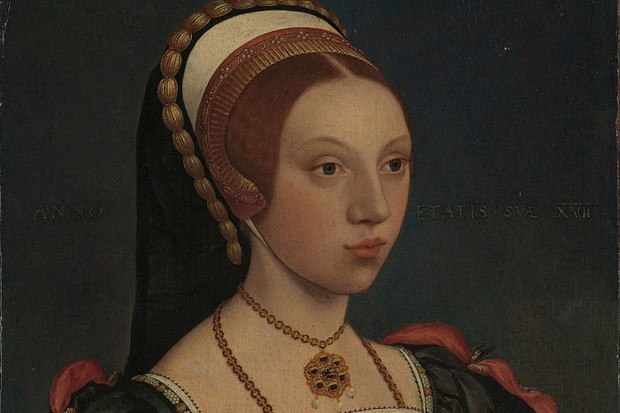
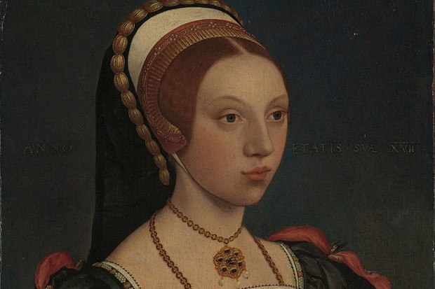

6+1 cudownych żon Henryka VIII
Piąta żona Henryka VIII
Powtarzająca się historia, czyli o żonach króla Anglii
Katarzyna Howard
Pod koniec 1539 roku, dzięki interwencji stryja Katarzyny, Tomasza Howarda, 3. księcia Norfolk (1473-1554), dziewczyna została wybrana na damę dworu Anny Kliwijskiej, kiedy ta została królową Anglii. Henryk i Anna pobrali się bowiem w styczniu 1540 roku, gdy Anna miała dwadzieścia cztery lata, zaś Henryk przeżywał czterdziestą ósmą wiosnę życia. Ich małżeństwo trwało jednak bardzo krótko, bo zaledwie sześć miesięcy. Przebywając na dworze, Katarzyna Howard utrzymywała kontakty z Tomaszem Culpeperem (ok. 1514-1541), który służył wówczas królowi w jego komnatach. W tym samym czasie w królewskim pałacu gruchnęła wieść, że Katarzyna i Tomasz chcą się pobrać. Lecz Henryk nie zamierzał do tego dopuścić, więc zablokował to rzekome małżeństwo, prosząc o rękę Katarzyny. Podstarzały król zakochał się bowiem w młodziutkiej pannie Howard i zaczął wysyłać jej tony prezentów, a także pisać do niej listy miłosne. To wszystko sprawiło, że 28 lipca 1540 roku, czyli zaledwie trzy tygodnie po unieważnieniu małżeństwa z Anną Kliwijską, król poślubił Katarzynę w pałacu Oatlands w Surrey, czyniąc ją jednocześnie swoją piątą z kolei żoną. Dla Katarzyny było to zatem prawdziwe spektakularne przejście z ciemności do rezydencji władzy.
Galeria

Ciekawostki
Kiedy Katarzyna Howard została aresztowana w pałacu Hampton Court w listopadzie 1541 roku, sądziła, że pozbyła się swoich strażników i krzycząc, ile tylko miała sił w płucach, biegła korytarzem do królewskiej prywatnej kaplicy, gdzie spodziewała się ujrzeć Henryka uczestniczącego we mszy. Błagała króla o miłosierdzie, lecz bezskutecznie. Dzisiaj wielu uważa, że ducha Katarzyny można zobaczyć, a nawet usłyszeć, krzyczącego i biegnącego wzdłuż tego, co obecnie znane jest jako Haunted Gallery (z pol. Nawiedzona Galeria). Choć pracownicy Haunted Gallery otwarcie mówią, że nigdy tak naprawdę nie widzieli ducha Katarzyny Howard, to jednak jest coś, co może świadczyć o obecności królowej w tym miejscu. Otóż, gdy staniemy w jednym konkretnym miejscu w załomie galerii, wyraźnie odczuwamy nagły spadek temperatury. Tego dziwnego zjawiska nikomu do tej pory nie udało się logicznie wyjaśnić.
Fakty
Lata życia
Rodzice
Pochodzenie
1521/1525-1542
Joyce Culpeper i Edmund Howard
Hiszpania
Katarzyna Howard
Pod koniec 1539 roku, dzięki interwencji stryja Katarzyny, Tomasza Howarda, 3. księcia Norfolk (1473-1554), dziewczyna została wybrana na damę dworu Anny Kliwijskiej, kiedy ta została królową Anglii. Henryk i Anna pobrali się bowiem w styczniu 1540 roku, gdy Anna miała dwadzieścia cztery lata, zaś Henryk przeżywał czterdziestą ósmą wiosnę życia. Ich małżeństwo trwało jednak bardzo krótko, bo zaledwie sześć miesięcy. Przebywając na dworze, Katarzyna Howard utrzymywała kontakty z Tomaszem Culpeperem (ok. 1514-1541), który służył wówczas królowi w jego komnatach. W tym samym czasie w królewskim pałacu gruchnęła wieść, że Katarzyna i Tomasz chcą się pobrać. Lecz Henryk nie zamierzał do tego dopuścić, więc zablokował to rzekome małżeństwo, prosząc o rękę Katarzyny. Podstarzały król zakochał się bowiem w młodziutkiej pannie Howard i zaczął wysyłać jej tony prezentów, a także pisać do niej listy miłosne. To wszystko sprawiło, że 28 lipca 1540 roku, czyli zaledwie trzy tygodnie po unieważnieniu małżeństwa z Anną Kliwijską, król poślubił Katarzynę w pałacu Oatlands w Surrey, czyniąc ją jednocześnie swoją piątą z kolei żoną. Dla Katarzyny było to zatem prawdziwe spektakularne przejście z ciemności do rezydencji władzy.
Galeria

Ciekawostki
Kiedy Katarzyna Howard została aresztowana w pałacu Hampton Court w listopadzie 1541 roku, sądziła, że pozbyła się swoich strażników i krzycząc, ile tylko miała sił w płucach, biegła korytarzem do królewskiej prywatnej kaplicy, gdzie spodziewała się ujrzeć Henryka uczestniczącego we mszy. Błagała króla o miłosierdzie, lecz bezskutecznie. Dzisiaj wielu uważa, że ducha Katarzyny można zobaczyć, a nawet usłyszeć, krzyczącego i biegnącego wzdłuż tego, co obecnie znane jest jako Haunted Gallery (z pol. Nawiedzona Galeria). Choć pracownicy Haunted Gallery otwarcie mówią, że nigdy tak naprawdę nie widzieli ducha Katarzyny Howard, to jednak jest coś, co może świadczyć o obecności królowej w tym miejscu. Otóż, gdy staniemy w jednym konkretnym miejscu w załomie galerii, wyraźnie odczuwamy nagły spadek temperatury. Tego dziwnego zjawiska nikomu do tej pory nie udało się logicznie wyjaśnić.
Fakty
| Lata życia | Rodzice | Pochodzenie |
| 1521/1525-1542 | Joyce Culpeper i Edmund Howard | Hiszpania |